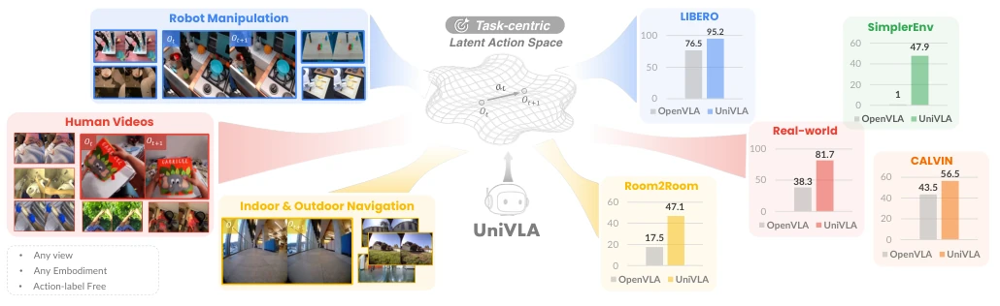
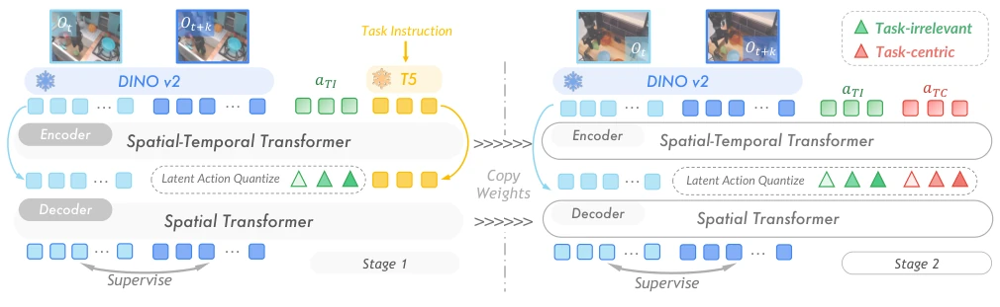
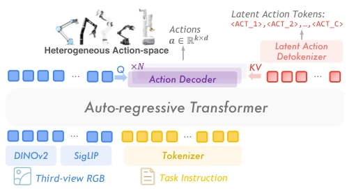
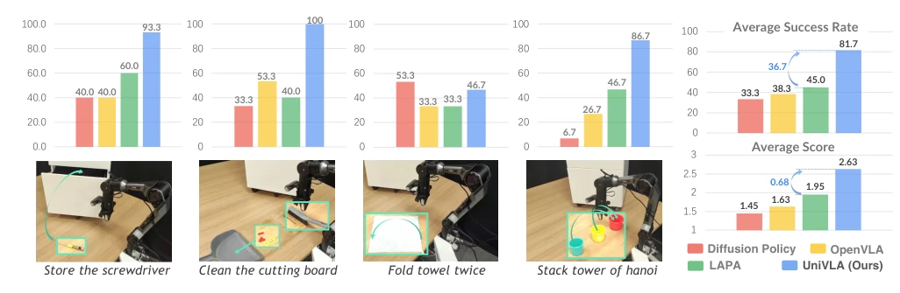
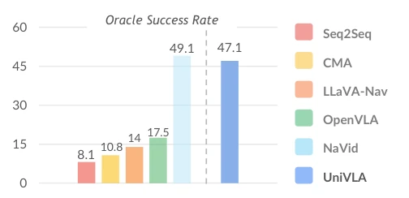
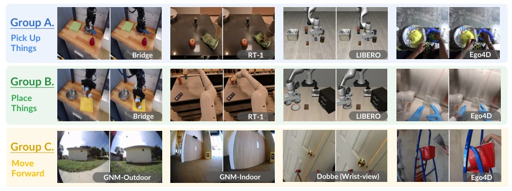
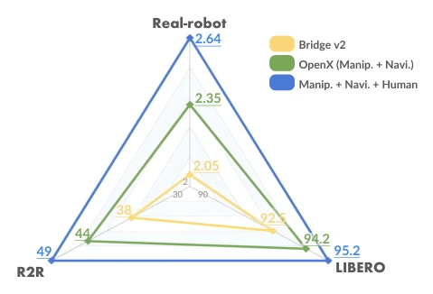
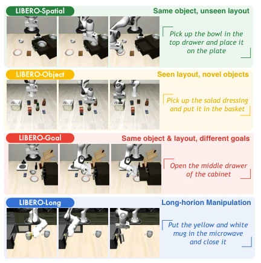
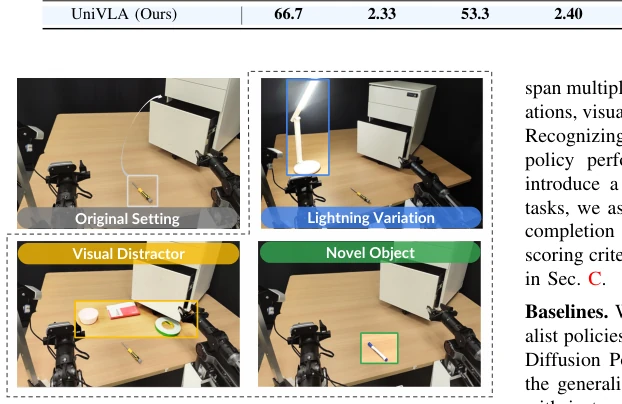
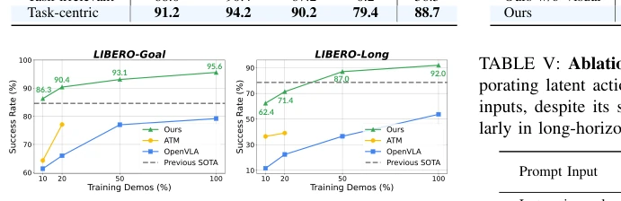

This UniVLA attempts to solve the VLA generalization challenge using 'task-centric' implicit actions, which is indeed impressive. It claims to surpass OpenVLA with 1/20 of the training cost, which is simply a 'king of competition' move in the current era of compute inflation. However, the so-called 'Anywhere' is somewhat exaggerated, as deployment still requires a lightweight decoder to adapt to different robots, not truly zero-shot. The most brilliant part is that it uses DINOv2 and language instructions to decouple 'task-related' from 'background noise', which is much smarter than simple pixel prediction. However, the quality of human video data varies, and whether the model can truly understand human intent rather than imitate action trajectories remains to be seen. Furthermore, although it claims to utilize human videos, the lack of action labels may lead to semantic alignment bias. Overall, this is an engineering feat that is quite excellent in data efficiency and cross-entity transfer, but it is still far from a true 'general-purpose robot', especially regarding robustness in complex physical interactions which still needs verification.
Existing VLA models such as OpenVLA [39] and RT-2 [10] heavily rely on data with action labels, which limits the ability to utilize massive internet videos. The action spaces of different robot embodiments are heterogeneous, leading to difficulties in knowledge transfer. LAPA [87] and others attempt unsupervised learning of implicit actions, but often capture irrelevant dynamics (such as camera shake), interfering with policy training. Although Genie [12] utilizes causal implicit action models, it also faces interference from task-irrelevant dynamics. UniVLA aims to solve these problems by extracting task-related actions from videos in an unsupervised manner, achieving cross-entity, cross-view general policy learning, and reducing dependence on labeled data. It attempts to build a unified action space, enabling policies to transfer knowledge across languages like large language models, thereby unlocking the potential of internet-scale video data.

Fig. 1: We introduce UniVLA, a unified vision-language-action (VLA) framework that enables policy learning across different environments. By deriving task-centric latent actions in an unsupervised manner, UniVLA can leverage data from arbitrary embodiments and perspectives without action labels. After large-scale pretraining from videos, UniVLA develops a cross- embodiment generalist policy that can be readily deployed across various robots by learning an action decoding with minimal cost. Compared to OpenVLA [39], UniVLA exhibits unanimous improvement on multiple manipulation and navigation tasks.
The overall process is divided into three steps. First is task-centric implicit action learning, utilizing an inverse dynamics model (IDM) and DINOv2 features, combined with T5 language instructions, decoupled in two stages: the first stage learns irrelevant dynamics, the second stage freezes the irrelevant codebook to specifically learn task-related implicit actions (VQ-VAE). Second is general policy pre-training, based on Prismatic-7B VLM, mapping discrete implicit actions to special tokens for autoregressive prediction. Finally is deployment decoding, converting implicit actions into physical control signals through a lightweight LoRA decoder. The innovation lies in constraining the implicit action space with language instructions, ensuring action encoding contains only task-related dynamics, not all visual changes. Specifically, the encoder infers implicit actions, the decoder predicts future frames, optimizing quantized action tokens via VQ-VAE objectives. The policy model receives visual observations and task instructions, predicts the next implicit action token, and finally outputs physical actions through the decoder.

Fig. 2: Task-centric latent action learning. We propose a two-stage training framework aimed at disentangling task-centric visual dynamics and changes from extraneous factors. In Stage 1, task instruction embeddings, derived from a pre-trained T5 text encoder [67], are utilized as inputs to both the encoder and decoder. These embeddings provide task-relevant semantic information to enhance predictive accuracy. In Stage 2, a novel set of latent actions is introduced, specifically designed to replace the role of language and to capture task-centric dynamics from DINOv2-encoded features of video frames.

Fig. 3: Architecture of the generalist policy. Our policy architecture is founded on the Prismatic-7B Vision-Language Model (VLM) [37], which processes projected visual em- beddings and tokenized task instructions as inputs to predict latent action tokens in an auto-regressive manner. To adapt to specific robotic systems, specialized action decoder heads are employed. These decoders leverage visual information to extract context-specific features from latent actions and subsequently translate them into executable control signals of robotic systems with heterogeneous action spaces.
On the LIBERO manipulation benchmark, UniVLA achieves a 95.2% success rate, surpassing OpenVLA by 18.7%. In the R2R navigation task, the Oracle Success Rate reaches 47.1%, outperforming OpenVLA. Real robot deployment (Piper arm) success rate increases by 36.7%. Ablation studies show that task-centric implicit actions are significantly better than task-irrelevant actions (LIBERO-Long success rate increases from 0.2% to 79.4%). Data scaling experiments indicate that performance continues to improve after adding OpenX and human video data. Baselines include OpenVLA [39], LAPA [87], Octo [28], etc. Datasets cover Bridge-V2, GNM, and Ego4D. Real-world tests introduce generalization scenarios such as lighting changes, visual interference, and novel objects; UniVLA performs robustly in these scenarios, proving the effectiveness of its task-centric implicit actions.

Fig. 5: Real-world robot experiments. We propose four different tasks: “Store the screwdriver”, “Clean the cutting board”, “Fold towel twice”, and “Stack tower of hanoi”, towards the evaluation of four axis of policy’s capabilities. UniVLA outperforms previous state-of-the-art with an average elevation of 36.7% success rate and 0.68 average score across all tasks.

Fig. 6: Oracle success rate on R2R in VLN-CE. With only a single-frame RGB input, UniVLA demonstrates performance on par with NaVid, a navigation model that incorporates the entirety of historical observations, while markedly outperform- ing OpenVLA in success rate.

Fig. 8: Latent action analysis. We plot image pairs labeled with the same latent action from different sources of data and embodiments. Each group of latent actions exhibits semantic-consistent actions. More examples are in Sec. B.

Fig. 9: Data scalability. UniVLA effectively expands its pretraining corpus by incorporating cross-embodiment data from OpenX and unlabeled human demonstrations, leading to continuously improved downstream performance.
其他图片Other Figures

Fig. 4: Task setup on the LIBERO benchmark.

Fig. 7: Setting on generalizability evaluations. We evaluate the generalizability of policies in 3 different settings. (a) Lightning Variation: We dimmed the ambient light and applied strong lighting in a specified direction. (b) Visual Distractor: We added a bowl, notebook, and tape on the tabletop. (c) Novel Object: We replaced the object to be manipulated from a screwdriver to an unseen marker pen.

Fig. 10: Data efficiency. We present the success rate of UniVLA across varying dataset proportions (10%, 20%, 50%, and the full dataset). Our policy can be adapted to an unseen environment without requiring extensive expert demos for training, showing notable superiority over baselines.